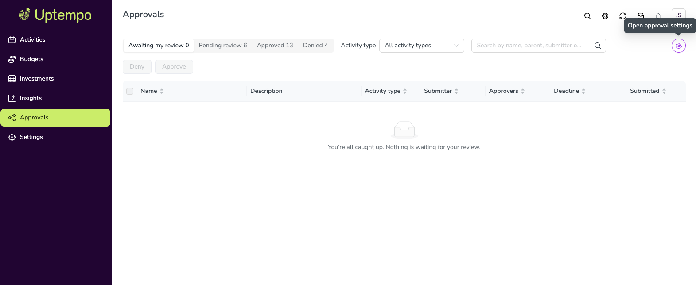

Review and decide on approval requests
The Approvals page lists the approval requests for activities you can view. As an approver, you can approve or deny requests on the Approvals page, or directly from an activity's details panel on the Timeline.
Before you begin
Activity approvals must be enabled in your Uptempo instance. This feature is in Preview; contact your Customer Success Manager to enable it.
To see a request, you need view access to the activity.
To approve or deny a request, you must be one of its assigned approvers, or an admin.
How the Approvals page works
Open the Approvals page
Open the Approvals page in either of these ways:
Click Approvals in the navigation menu.
Click the link in an approval email. The link opens the request on the Approvals page.
Tabs
Requests are organized into tabs. Each tab shows a count of its requests.
- Awaiting my review
Pending requests assigned to you. Requests are sorted by soonest deadline.
- Pending review
All pending requests for activities you can view, including requests assigned to other approvers.
- Approved
Requests that have been approved.
- Denied
Requests that have been denied.


Columns
Each request shows the following columns:
Name: The activity name.
Description: The description entered at submission, which starts with the activity's own description. Long descriptions are shortened; open the request to read the full text.
Activity type
Submitter
Approvers: The first assigned approver, plus a count (for example, +2) when several are assigned.
Deadline: Requests that are overdue, or due within 7 days, are flagged.
Submitted: The date the request was submitted.
Search
Use the search field to find requests by activity name, submitter, approver, or parent activity.
Request details
Click any request to open its details, which show:
The submitter, all assigned approvers, and how the approvers were assigned
The deadline, its urgency, and the request status
The approval process and the description
The request history, including who submitted, who decided, when, and any comments
Click Open in Activities to view the activity on the Timeline.
Decisions and comments
A comment is required when you deny a request, and optional when you approve. Comments are saved on the approval request and shown in its history.
When several approvers are assigned, the first one to decide settles the request. The other approvers see that the request has been decided, and by whom.
Decisions are final and can't be undone.
Approve or deny a request on the Approvals page
Approve or deny a request on the Approvals page
On the Approvals page, click the Awaiting my review tab.
Click the request to open its details. Review the description and history.
Optional: Click Open in Activities to review the activity itself.
Click Approve or Deny.
Enter a comment:
Approve: Optional.
Deny: Required. Explain what the submitter needs to change.
Confirm your decision.
The request moves to the Approved or Denied tab, and your decision and comment are recorded in the request history.
Approve or deny a request from the Timeline
Approve or deny a request from the activity details panel
In the
 Activities section, click the activity to open its details panel.
Activities section, click the activity to open its details panel.Review the activity and its pending approval request.
Click Approve or Deny.
Enter a comment:
Approve: Optional.
Deny: Required. Explain what the submitter needs to change.
Confirm your decision.
Your decision and comment are recorded in the request history, and the request moves to the Approved or Denied tab on the Approvals page.